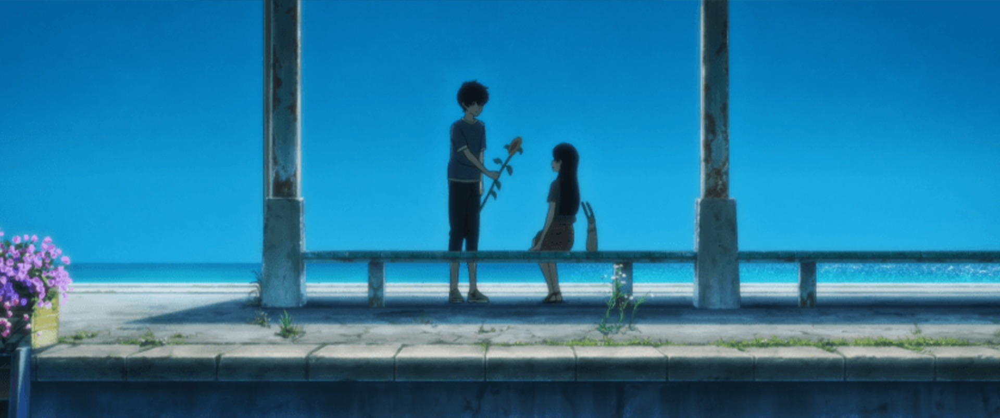
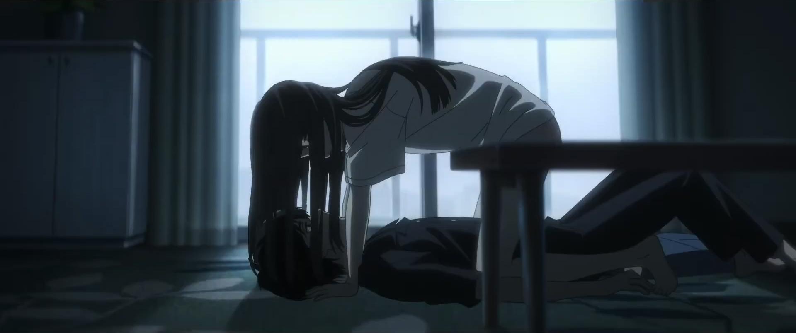
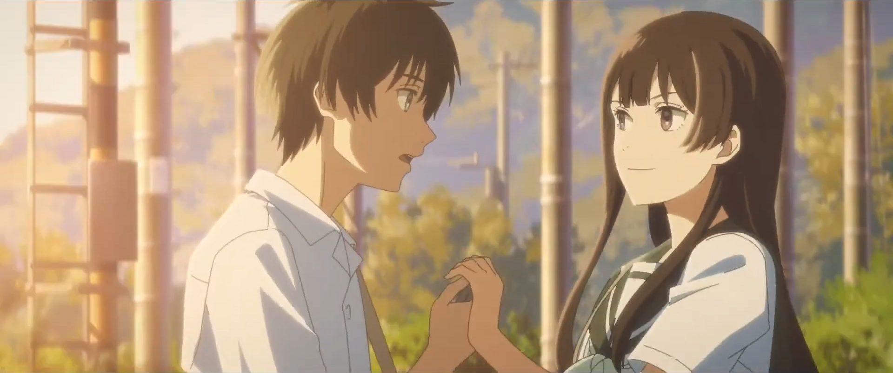
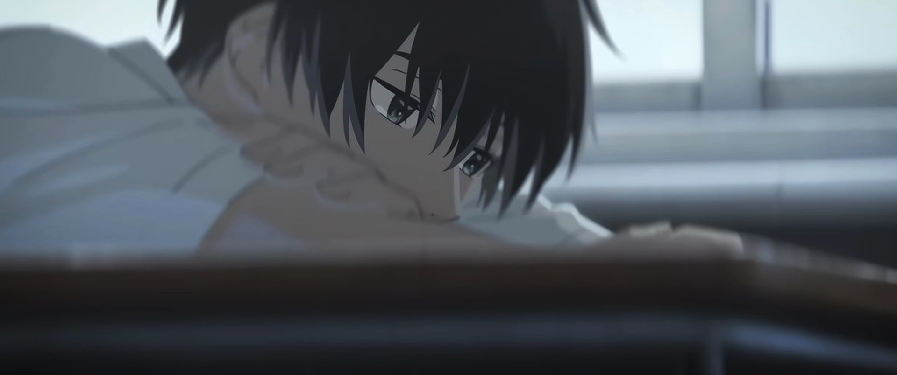
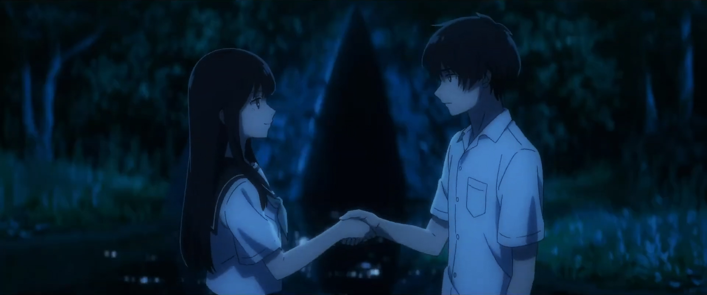
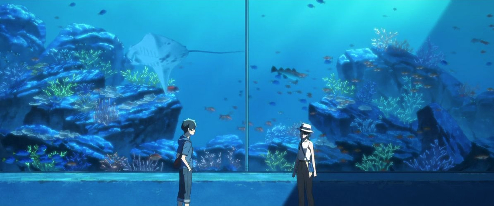
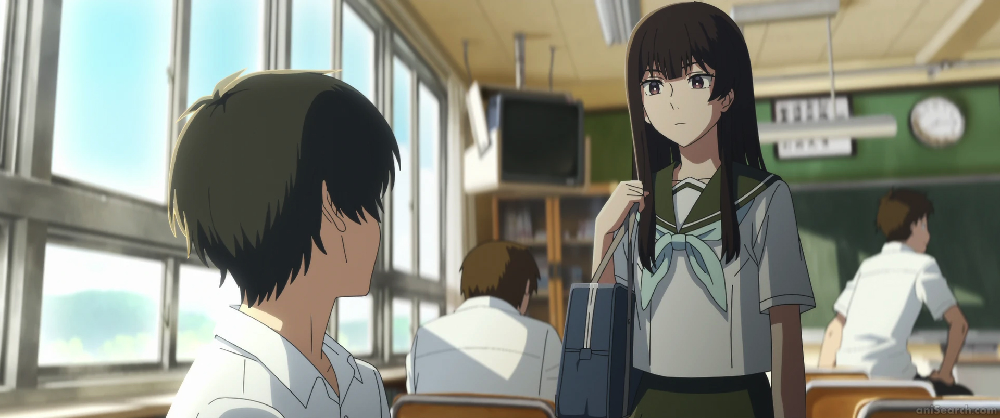
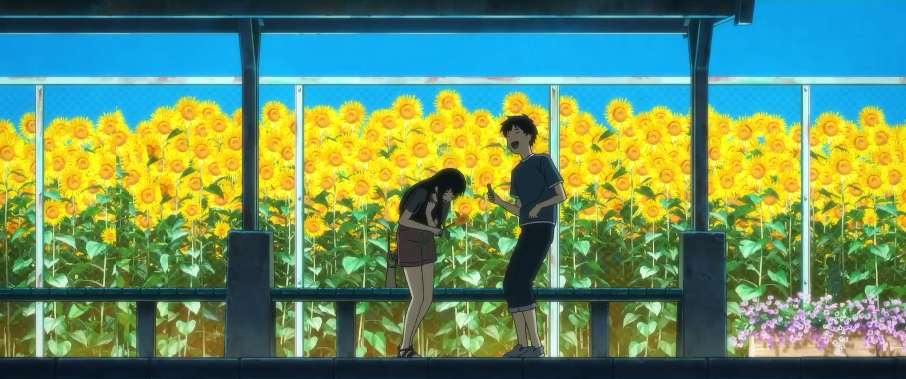
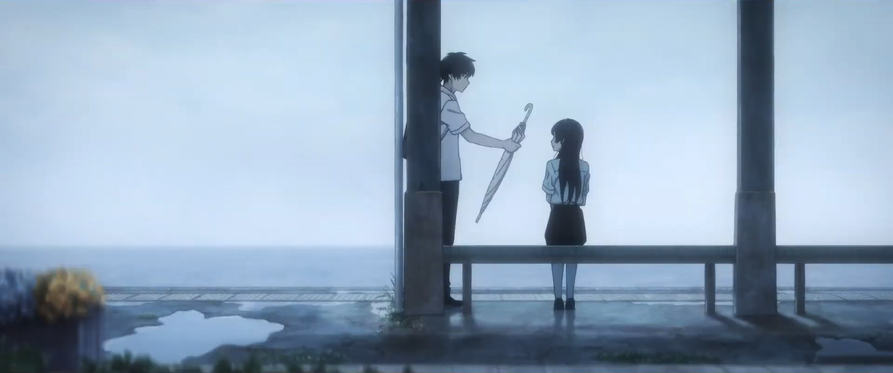
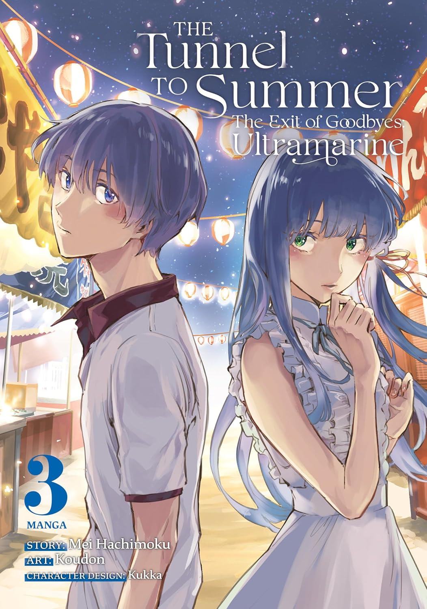

Dir. Tomohisa Taguchi, John Swasey
Cast: Marie litoyo, Ouji Suzuka
The Urashima Tunnel can grant any wish...for a price. High school boy Kaoru, plagued by a troubled past, teams up with Anzu, a girl who struggles to place obligations before her dreams, to investigate the Tunnel. But the cost of their hearts' desires may be too high to pay. This is an unforgettable summer story of nostalgia, young love and bending time itself.









×

"Goodbyes are like tunnels, leading to new beginnings."
